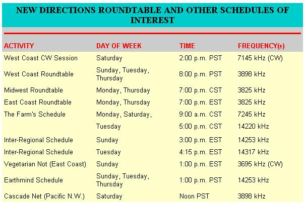

New Directions Radio
Learning Morse code and thoughts on CW networks.
By Copthorne-MacDon
March/April 1976
Many of us currently active in New Directions Radio got our ham licenses years before we became involved in alternative lifestyles, the back-to-the-land movement, or concern over the future of the planet. By the time we did "turn on" to these things, we already had our FCC tickets and our shacks full of radio gear. And, as we started to track down and communicate with other hams about our new concerns, we simply used the equipment we already had on hand . . . which often tended to be sophisticated, complex, and downright expensive.
We used all this fancy gear because we had it, and because it fit well into our daydreams of coast-to-coast roundtables, international rap sessions, seeing each other via slow-scan TV, etc. Fine. This is great for those of us who already have licenses and fancy equipment . . . but what about newcomers who want to join the fun? Shouldn't we focus more of our attention and energy on activities in which everyone can participate-including those just getting into ham radio-using simple, truly low-cost equipment? If the letters I've been getting lately are any indication, I'd say the answer is definitely yes.
IS CODE THE MODE?
If we were to ask which modes of transmission are both available to beginners and provide a useful level of communication with simple gear, we'd see two possibilities. First, Novice Class licensees can use Morse code in the 40- and 80-meter bands. The ionosphere reflects signals back to earth on these bands, and communication up to several hundred miles can routinely be accomplished with low transmitter power. Alternatively, Technician Class operators can transmit voice in the VHF (very high frequency) ham bands. Here, the much shorter wavelengths penetrate the ionosphere and are not reflected back to earth . . . meaning that communication is limited to 10 or 20 miles with simple equipment and antennas. In many parts of North America, however, clubs have built "repeaters" on hills or tall towers to extend the range of simple voice equipment to 50 miles or so.
I should mention at this point that a code test is required of applicants for both Novice and Technician Class permits. The test, however, is not difficult-5 words per minute in the U.S., 10 wpm in Canada-and in any case, the FCC may soon introduce a Communicator Class license (for VHF phone) which would require no code ability at all.
Since the primary goal of New Directions Radio amateurs is to communicate with others who share our special interests (as opposed to the usual ham practice of gabbing with anyone who can be heard), geography becomes important. Are there groups or individuals who live only a few miles away that you'd like to contact? If so, VHF phone operation might be just the thing. Folks who live in rural areas, though, could find the population density of kindred souls pretty low. In this case, CW (code) on 40 and 80 looks like the best bet.
At first, you might think Morse code is a pretty crude way to communicate . . . but it actually has many advantages over other modes. Usable equipment, for instance, can be extremely simple to operate and inexpensive to put and keep in service. (See the CW transmitters described in MOTHER NOS. 34 and 36.) Also, since code signals use up very little "bandwidth", many more code than voice stations can operate in the same bandwidth segment without interfering with each other. And communication reliability-for any given distance, transmitter power, or antenna-is always better with code than voice.
The single biggest disadvantage of CW is the low speed of information transfer. Unless you've practiced a lot, or been through High-Speed Operator training in the military, you won't be able to send code at a rate even approaching conversational speech . . . and your partner wouldn't understand you if you did. But if high-power voice hardware is out of reach-either due to cost, or because you lack the appropriate license-don't fail to give those "dits and dahs" serious consideration.
CW NETWORKS: SOME THOUGHTS
Our early attempts at CW nets weren't very successful, but now that more people seem to be interested it looks as though it's time to try again. Bear in mind that there's a creative challenge in working with code, trying to use what it has to offer while minimizing its drawbacks. We should all think about how best to utilize this form of communication, and share ideas on the subject. Here are a few of mine:
[1] Instead of starting with scheduled nets, why don't we begin with schedules between individuals? Sessions which become regular affairs can then be publicized for the benefit of anyone who'd like to join in. Eventually, such schedules might turn into real nets of their own.
[2] Up-to-date schedules could be announced during regular roundtable sessions. Perhaps some stations would even volunteer to send daily CW bulletins announcing current skeds and other news of interest.
[3] Since only so many words can be transmitted during each CW session, it helps to write everything down in a permanent notebook. (I like to use dividers marked with the call numbers of frequent contacts.) By keeping an ongoing written record of the other follow's messages, we can gradually build up a collection of his words, thoughts, and ideas and retain a bit of continuity.
[4] Just as phone is a mode for transmitting the spoken word, CW is a mode for conveying the written word. Ten words per minute of well-thought-out prose can actually get your ideas across faster than 200 words per minute of ill-conceived chitchat. So write down-as concisely as you can-the major things you want to say before you go on the air.
[5] What should we talk about? For starters, how about specific info on ourselves? News items? Answers to requests for information? Short book reviews? Your latest poem?
If you'd like to start some CW skeds, let me know and I'll try to put you in touch with others who both live within range of your station and desire the same thing. In addition, please send along your ideas for how to humanize-and otherwise make the most of-the CW mode.
On the technical side, CW offers a number of interesting possibilities. For instance, there are typewriter-like keyboards which will send perfect code . . . converters that transform received Morse signals to a teletype readout or words on a TV screen . . . and even "coherent reception" techniques by which very weak CW transmissions can be pulled out of background noise.
Paul Doerr (225 E. Utah, Fairfield, Calif. 94533) has suggested that some of our "backwoods electronics wizards" produce a line of add-on units that'd allow folks to start sending and receiving code at absolute minimum cost, and then gradually expand the capabilities of their stations as they go along.
Let's share ideas.
A NEW DIRECTIONS NEWSLETTER
Randy Brink (WA7BKR) has begun to write The New Directions Roundtable Newsletter. . . which is a poop sheet full of info on schedules, alternative energy projects, what's happening in the roundtables, and "who's doin' what". Burton Bogardus (W6HSE) is printing the little bulletin, which Brink says is free to anyone interested (although, personally, I'd send a small donation). Randy's address is Rt. 2, Box 301 B, Port Orchard, Wash. 98366.
Also, our friend Ed Noll (W3FQJ) has just added a very useful new book to the tall stack he's already written. It's entitled Wind/Solar Energy for Radiocommunication and Low-Power Electronic/Electric Applications, and I consider it the ideal "energy book" for many of us. The manual is full of practical information about solar cells, wind generators, inverters, and batteries . . . plus lots of leads on companies and individuals "that are doin"'. Ed also describes in detail the Wincharger and solar cell array that powers his own ham gear.
If you're already heavily into solar and wind energy, of course, some of Noll's stuff may be old hat. But for those of us who can't find time to make a several-hundred-hour-long survey of the field, Ed's book is well worth the $7.95 price tag. You can order the volume by mail from Ed Noll at Box 75, Chalfont, Pa. 18914, or obtain a copy where books on electronics are sold.
Peace,
Cop Macdonald (VE1BFL)
99 Fitzroy St.
Charlottetown
Prince Edward Island
Canada
 |
 |
|